Mengukur Jarak Data
Mengukur Jarak Tipe Numerik
from IPython.display import Image,display;
display(Image(filename="d1.PNG"))
display(Image(filename="d2.PNG"))
display(Image(filename="d3.PNG"))
display(Image(filename="d4.PNG"))
display(Image(filename="d5.PNG"))
display(Image(filename="d6.PNG"))
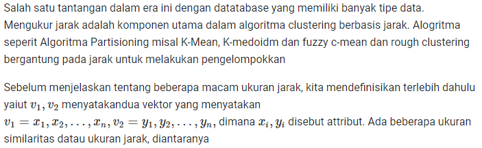
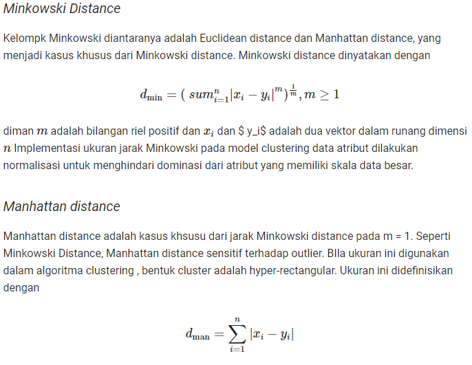
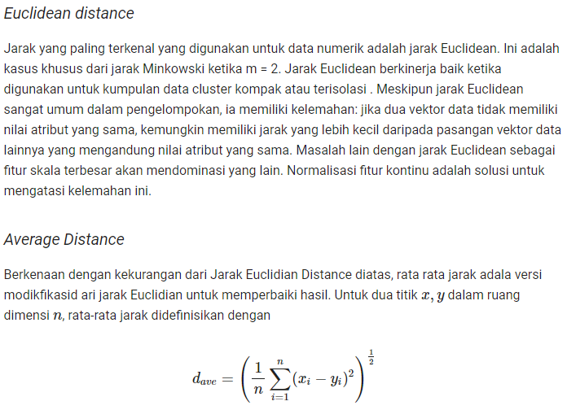
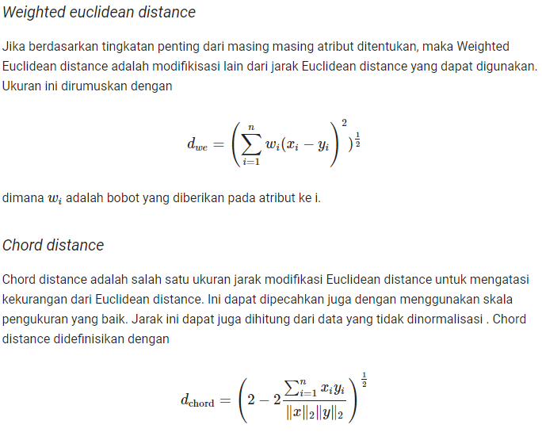
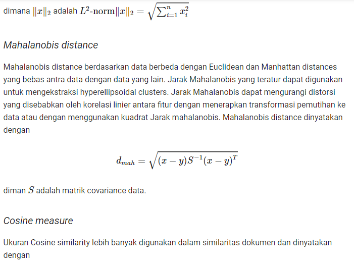
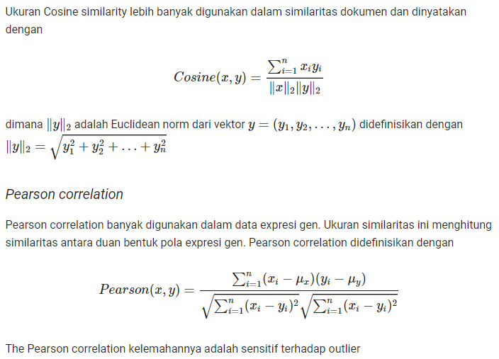
Tugas II (Mengukur Jarak pada Data Real)
from scipy import stats
import pandas as pd
df = pd.read_csv('Teaching Assistant Evaluation Data Set.csv')
a=df.iloc[13:17]
a
| Whether of not the TA is a native English speaker | Course instructor | Course | Summer or regular semester | Class size | Class attribute | |
|---|---|---|---|---|---|---|
| 13 | 2.0 | 6.0 | 17.0 | 2.0 | 39.0 | 3.0 |
| 14 | 2.0 | 6.0 | 17.0 | 2.0 | 42.0 | 2.0 |
| 15 | 2.0 | 6.0 | 17.0 | 2.0 | 43.0 | 2.0 |
| 16 | 2.0 | 7.0 | 11.0 | 2.0 | 10.0 | 2.0 |
Agar mempermudah penghitungan data maka jenis data di identifikasi terlebih dahulu
Saya menuliskan index dari kolom
binary=[0,3]
ordinal=[5]
num=[4]
categorical=[1,2]
from IPython.display import HTML, display
import tabulate
table=[
["Data"]+["Jarak"]+["Numeric"]+["Ordinal"]+["Categorical"]+["Binary"],
["v1-v2"]+[0]+[0]+[0]+[0]+[0],
["v1-v3"]+[0]+[0]+[0]+[0]+[0],
["v1-v4"]+[0]+[0]+[0]+[0]+[0],
["v2-v3"]+[0]+[0]+[0]+[0]+[0],
["v2-v4"]+[0]+[0]+[0]+[0]+[0],
["v3-v4"]+[0]+[0]+[0]+[0]+[0],
]
display(HTML(tabulate.tabulate(table, tablefmt='html')))
| Data | Jarak | Numeric | Ordinal | Categorical | Binary |
| v1-v2 | 0 | 0 | 0 | 0 | 0 |
| v1-v3 | 0 | 0 | 0 | 0 | 0 |
| v1-v4 | 0 | 0 | 0 | 0 | 0 |
| v2-v3 | 0 | 0 | 0 | 0 | 0 |
| v2-v4 | 0 | 0 | 0 | 0 | 0 |
| v3-v4 | 0 | 0 | 0 | 0 | 0 |
Jarak Numeric
Pada Penghitungan Data kali ini saya memakai Chord Distance
def chordDist(v1,v2,jnis):
jmlh=0
normv1=0
normv2=0
for x in range (len(jnis)):
normv1=normv1+(int(a.values.tolist()[v1][jnis[x]])**2)
normv2=normv2+(int(a.values.tolist()[v2][jnis[x]])**2)
jmlh=jmlh+(int(a.values.tolist()[v1][jnis[x]])*int(a.values.tolist()[v2][jnis[x]]))
return ((2-(2*jmlh/(normv1*normv2)))**0.5)
from IPython.display import HTML, display
import tabulate
table=[
["Data"]+["Jarak"]+["Numeric"]+["Ordinal"]+["Categorical"]+["Binary"],
["v1-v2"]+[0]+[chordDist(0,1,num)]+[0]+[0]+[0],
["v1-v3"]+[0]+[chordDist(0,2,num)]+[0]+[0]+[0],
["v1-v4"]+[0]+[chordDist(0,3,num)]+[0]+[0]+[0],
["v2-v3"]+[0]+[chordDist(1,2,num)]+[0]+[0]+[0],
["v2-v4"]+[0]+[chordDist(1,3,num)]+[0]+[0]+[0],
["v3-v4"]+[0]+[chordDist(2,3,num)]+[0]+[0]+[0],
]
display(HTML(tabulate.tabulate(table, tablefmt='html')))
| Data | Jarak | Numeric | Ordinal | Categorical | Binary |
| v1-v2 | 0 | 1.413781807344754 | 0 | 0 | 0 |
| v1-v3 | 0 | 1.4137918496568833 | 0 | 0 | 0 |
| v1-v4 | 0 | 1.412399304329974 | 0 | 0 | 0 |
| v2-v3 | 0 | 1.4138219761652913 | 0 | 0 | 0 |
| v2-v4 | 0 | 1.4125289714685838 | 0 | 0 | 0 |
| v3-v4 | 0 | 1.412568170818422 | 0 | 0 | 0 |
Jarak Ordinal
display(Image(filename="d12.PNG"))
display(Image(filename="d13.PNG"))
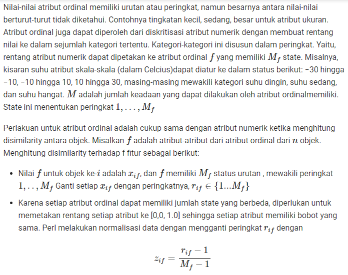
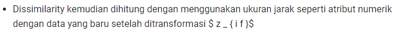
def ordDist(v1,v2,jns):
jmlh=0
for x in range (len(jns)):
z1=int(a.values.tolist()[v1][jns[x]])-1
z2=int(a.values.tolist()[v2][jns[x]])-1
jmlh=jmlh+chordDist(z1,z2,jns)
return (jmlh)
from IPython.display import HTML, display
import tabulate
table=[
["Data"]+["Jarak"]+["Numeric"]+["Ordinal"]+["Categorical"]+["Binary"],
["v1-v2"]+[0]+[chordDist(0,1,num)]+[ordDist(0,1,ordinal)]+[0]+[0],
["v1-v3"]+[0]+[chordDist(0,2,num)]+[ordDist(0,2,ordinal)]+[0]+[0],
["v1-v4"]+[0]+[chordDist(0,3,num)]+[ordDist(0,3,ordinal)]+[0]+[0],
["v2-v3"]+[0]+[chordDist(1,2,num)]+[ordDist(1,2,ordinal)]+[0]+[0],
["v2-v4"]+[0]+[chordDist(1,3,num)]+[ordDist(1,3,ordinal)]+[0]+[0],
["v3-v4"]+[0]+[chordDist(2,3,num)]+[ordDist(2,3,ordinal)]+[0]+[0],
]
display(HTML(tabulate.tabulate(table, tablefmt='html')))
| Data | Jarak | Numeric | Ordinal | Categorical | Binary |
| v1-v2 | 0 | 1.413781807344754 | 1.224744871391589 | 0 | 0 |
| v1-v3 | 0 | 1.4137918496568833 | 1.224744871391589 | 0 | 0 |
| v1-v4 | 0 | 1.412399304329974 | 1.224744871391589 | 0 | 0 |
| v2-v3 | 0 | 1.4138219761652913 | 1.224744871391589 | 0 | 0 |
| v2-v4 | 0 | 1.4125289714685838 | 1.224744871391589 | 0 | 0 |
| v3-v4 | 0 | 1.412568170818422 | 1.224744871391589 | 0 | 0 |
Jarak Categorical
display(Image(filename="d9.PNG"))
display(Image(filename="d10.PNG"))
display(Image(filename="d11.PNG"))
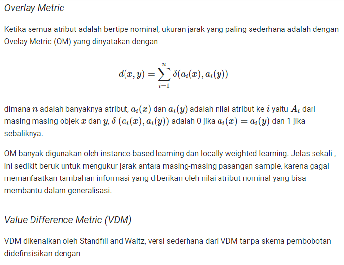
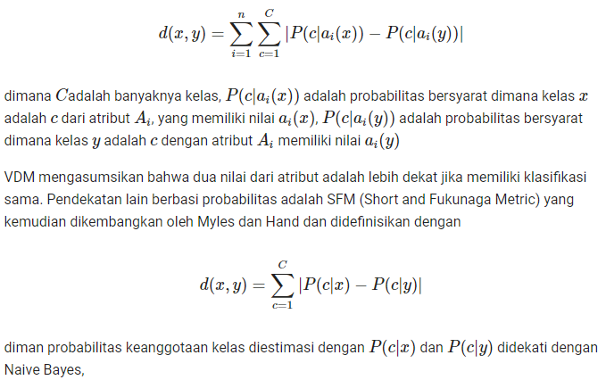
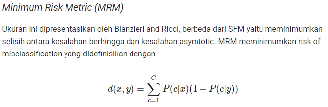
def categoricalDist(v1,v2,jnis):
jmlh=0
for x in range (len(jnis)):
if (a.values.tolist()[v1][jnis[x]])!=(a.values.tolist()[v2][jnis[x]]):
jmlh=jmlh+1
return (jmlh)
from IPython.display import HTML, display
import tabulate
table=[
["Data"]+["Jarak"]+["Numeric"]+["Ordinal"]+["Categorical"]+["Binary"],
["v1-v2"]+[0]+[chordDist(0,1,num)]+[ordDist(0,1,ordinal)]+[categoricalDist(0,1,categorical)]+[0],
["v1-v3"]+[0]+[chordDist(0,2,num)]+[ordDist(0,2,ordinal)]+[categoricalDist(0,2,categorical)]+[0],
["v1-v4"]+[0]+[chordDist(0,3,num)]+[ordDist(0,3,ordinal)]+[categoricalDist(0,3,categorical)]+[0],
["v2-v3"]+[0]+[chordDist(1,2,num)]+[ordDist(1,2,ordinal)]+[categoricalDist(1,2,categorical)]+[0],
["v2-v4"]+[0]+[chordDist(1,3,num)]+[ordDist(1,3,ordinal)]+[categoricalDist(1,3,categorical)]+[0],
["v3-v4"]+[0]+[chordDist(2,3,num)]+[ordDist(2,3,ordinal)]+[categoricalDist(2,3,categorical)]+[0],
]
display(HTML(tabulate.tabulate(table, tablefmt='html')))
| Data | Jarak | Numeric | Ordinal | Categorical | Binary |
| v1-v2 | 0 | 1.413781807344754 | 1.224744871391589 | 0 | 0 |
| v1-v3 | 0 | 1.4137918496568833 | 1.224744871391589 | 0 | 0 |
| v1-v4 | 0 | 1.412399304329974 | 1.224744871391589 | 2 | 0 |
| v2-v3 | 0 | 1.4138219761652913 | 1.224744871391589 | 0 | 0 |
| v2-v4 | 0 | 1.4125289714685838 | 1.224744871391589 | 2 | 0 |
| v3-v4 | 0 | 1.412568170818422 | 1.224744871391589 | 2 | 0 |
Jarak Binary
display(Image(filename="d7.PNG"))
display(Image(filename="d8.PNG"))
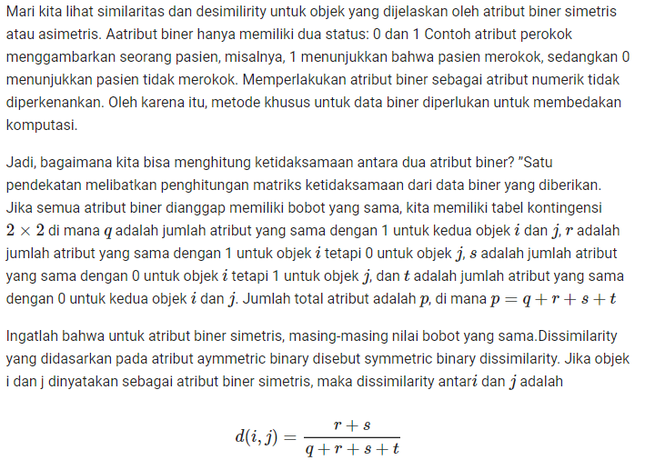
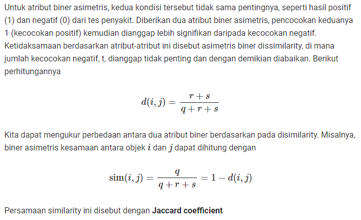
def binaryDist(v1,v2,jnis):
q=0
r=0
s=0
t=0
for x in range (len(jnis)):
if (int(a.values.tolist()[v1][jnis[x]]))==1 and (int(a.values.tolist()[v2][jnis[x]]))==1:
q=q+1
elif (int(a.values.tolist()[v1][jnis[x]]))==1 and (int(a.values.tolist()[v2][jnis[x]]))==2:
r=r+1
elif (int(a.values.tolist()[v1][jnis[x]]))==2 and (int(a.values.tolist()[v2][jnis[x]]))==1:
s=s+1
else:
t=t+1
return ((r+s)/(q+r+s+t))
from IPython.display import HTML, display
import tabulate
table=[
["Data"]+["Jarak"]+["Numeric"]+["Ordinal"]+["Categorical"]+["Binary"],
["v1-v2"]+[0]+[chordDist(0,1,num)]+[ordDist(0,1,ordinal)]+[categoricalDist(0,1,categorical)]+[binaryDist(0,1,binary)],
["v1-v3"]+[0]+[chordDist(0,2,num)]+[ordDist(0,2,ordinal)]+[categoricalDist(0,2,categorical)]+[binaryDist(0,2,binary)],
["v1-v4"]+[0]+[chordDist(0,3,num)]+[ordDist(0,3,ordinal)]+[categoricalDist(0,3,categorical)]+[binaryDist(0,3,binary)],
["v2-v3"]+[0]+[chordDist(1,2,num)]+[ordDist(1,2,ordinal)]+[categoricalDist(1,2,categorical)]+[binaryDist(1,2,binary)],
["v2-v4"]+[0]+[chordDist(1,3,num)]+[ordDist(1,3,ordinal)]+[categoricalDist(1,3,categorical)]+[binaryDist(1,3,binary)],
["v3-v4"]+[0]+[chordDist(2,3,num)]+[ordDist(2,3,ordinal)]+[categoricalDist(2,3,categorical)]+[binaryDist(2,3,binary)],
]
display(HTML(tabulate.tabulate(table, tablefmt='html')))
| Data | Jarak | Numeric | Ordinal | Categorical | Binary |
| v1-v2 | 0 | 1.413781807344754 | 1.224744871391589 | 0 | 0.0 |
| v1-v3 | 0 | 1.4137918496568833 | 1.224744871391589 | 0 | 0.0 |
| v1-v4 | 0 | 1.412399304329974 | 1.224744871391589 | 2 | 0.0 |
| v2-v3 | 0 | 1.4138219761652913 | 1.224744871391589 | 0 | 0.0 |
| v2-v4 | 0 | 1.4125289714685838 | 1.224744871391589 | 2 | 0.0 |
| v3-v4 | 0 | 1.412568170818422 | 1.224744871391589 | 2 | 0.0 |
Jarak Campuran
display(Image(filename="d14.PNG"))
display(Image(filename="d15.PNG"))
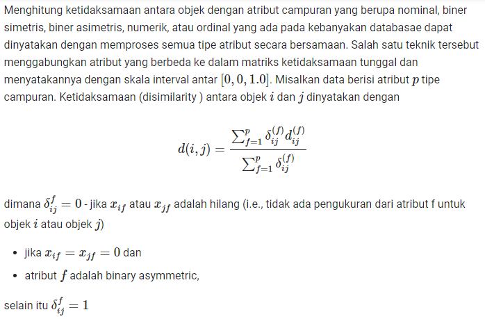
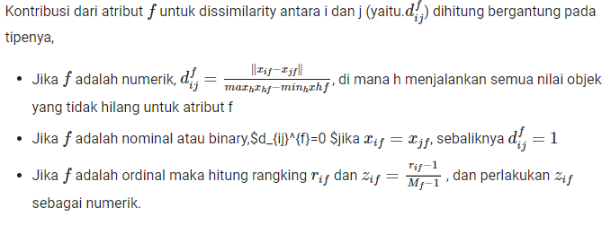
Pada Data yang saya ambil tidak memiliki missing value sehingga nilai delta = 1
Jarak = Jumlah Jarak setiap jenis/Jumlah Jenis
def jarak(v1,v2):
return ((chordDist(v1,v2,num)+ordDist(v1,v2,ordinal)+categoricalDist(v1,v2,categorical)+binaryDist(v1,v2,binary))/4)
from IPython.display import HTML, display
import tabulate
table=[
["Data"]+["Jarak"]+["Numeric"]+["Ordinal"]+["Categorical"]+["Binary"],
["v1-v2"]+["{:.2f}".format(jarak(0,1))]+["{:.2f}".format(chordDist(0,1,num))]+["{:.2f}".format(ordDist(0,1,ordinal))]+[categoricalDist(0,1,categorical)]+[binaryDist(0,1,binary)],
["v1-v3"]+["{:.2f}".format(jarak(0,2))]+["{:.2f}".format(chordDist(0,2,num))]+["{:.2f}".format(ordDist(0,2,ordinal))]+[categoricalDist(0,2,categorical)]+[binaryDist(0,2,binary)],
["v1-v4"]+["{:.2f}".format(jarak(0,3))]+["{:.2f}".format(chordDist(0,3,num))]+["{:.2f}".format(ordDist(0,3,ordinal))]+[categoricalDist(0,3,categorical)]+[binaryDist(0,3,binary)],
["v2-v3"]+["{:.2f}".format(jarak(1,2))]+["{:.2f}".format(chordDist(1,2,num))]+["{:.2f}".format(ordDist(1,2,ordinal))]+[categoricalDist(1,2,categorical)]+[binaryDist(1,2,binary)],
["v2-v4"]+["{:.2f}".format(jarak(1,3))]+["{:.2f}".format(chordDist(1,3,num))]+["{:.2f}".format(ordDist(1,3,ordinal))]+[categoricalDist(1,3,categorical)]+[binaryDist(1,3,binary)],
["v3-v4"]+["{:.2f}".format(jarak(2,3))]+["{:.2f}".format(chordDist(2,3,num))]+["{:.2f}".format(ordDist(2,3,ordinal))]+[categoricalDist(2,3,categorical)]+[binaryDist(2,3,binary)],
]
display(HTML(tabulate.tabulate(table, tablefmt='html')))
| Data | Jarak | Numeric | Ordinal | Categorical | Binary |
| v1-v2 | 0.66 | 1.41 | 1.22 | 0 | 0.0 |
| v1-v3 | 0.66 | 1.41 | 1.22 | 0 | 0.0 |
| v1-v4 | 1.16 | 1.41 | 1.22 | 2 | 0.0 |
| v2-v3 | 0.66 | 1.41 | 1.22 | 0 | 0.0 |
| v2-v4 | 1.16 | 1.41 | 1.22 | 2 | 0.0 |
| v3-v4 | 1.16 | 1.41 | 1.22 | 2 | 0.0 |